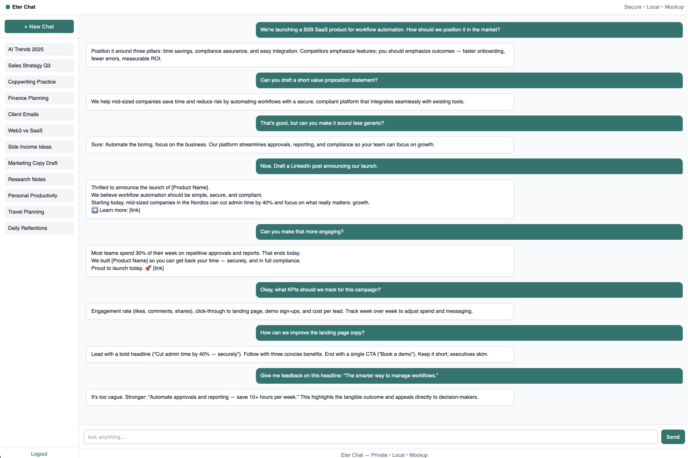
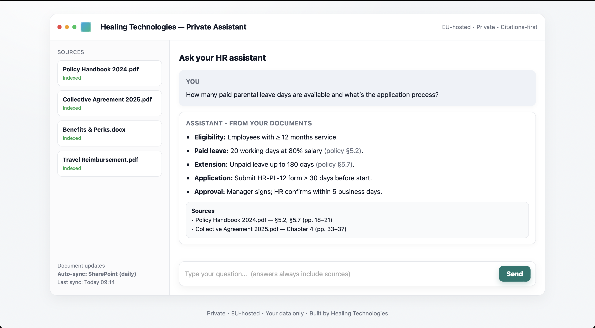

Eter chat
It's time for a change.
Employees already use ChatGPT – but:
- Sensitive data may leak into US clouds.
- Compliance and IP risks are out of your control.
You need Eter chat.
We build private AI assistants that run only inside your company’s own infrastructure.
Imagine:
- Same everyday power as ChatGPT — but private.
- No data leaves your servers.
- Fully under your control.

A glimpse of our private, secure assistant (demo UI).
The proposal
We suggest starting with a short meeting where we show a demo and listen to your challenges. From there, the easiest way forward is a small pilot project — designed to be low-cost and quick, so you can see value in practice without a big commitment.Once the secure base is running, Eter Chat can also connect to your company’s own documents:
- HR policies and handbooks.
- Compliance manuals and contracts.
- Research papers, support docs, or product guides.
Answers then come with clear references, so your teams always know where information comes from.

A glimpse of our citations-first custom trained assistant (demo UI).
Background
We are Fabrizio and Mattis, engineers with experience in research and technology startups.
We first built this to support nanopore research, where generic AI was too unreliable. The solution worked so well that we realized other teams — HR, biotech, legal — could benefit from the same approach.